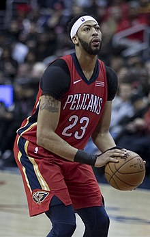
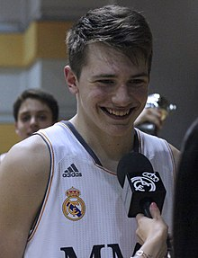
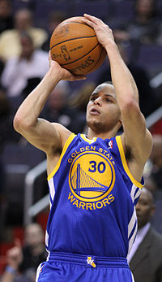

Anthony Davis
es un jugador de baloncesto profesional estadounidense de Los Angeles Lakers de la Asociación Nacional de Baloncesto (NBA). Juega en las posiciones de ala-pívot y centro . Davis es ocho veces All-Star de la NBA y ha sido incluido en cuatro primeros equipos All-NBA y cuatro equipos All-Defensive de la NBA . En su primera temporada con los Lakers, ganó un campeonato de la NBA en 2020. En 2021, fue incluido en el equipo del 75 aniversario de la NBA .
Davis jugó una temporada de baloncesto universitario para la Universidad de Kentucky , cuando era el primer equipo All-American y el Consensus National Player of the Year . También ganó el Novato Nacional del Año de la USBWA , el Jugador Defensivo del Año de la NABC y el premio Pete Newell Big Man . Davis lideró la NCAA en bloqueos y estableció récords de tiros bloqueados en una sola temporada para estudiantes de primer año de la Southeastern Conference y la NCAA Division I. Llevó a Kentucky a un campeonato nacional y fue nombrado el jugador más destacadodel torneo de la NCAA.
Davis dejó la universidad por la NBA después de una temporada y fue seleccionado como la primera selección general en el draft de la NBA de 2012 por los New Orleans Pelicans , conocidos entonces como los New Orleans Hornets, y fue seleccionado ese verano para jugar en los Juegos Olímpicos de 2012. Después de su temporada de novato, fue incluido en el primer equipo de novatos de la NBA . La próxima temporada, se convirtió en All-Star por primera vez y lideró la NBA en tiros bloqueados por juego . Desde entonces se ha convertido en el jugador más joven en anotar al menos 59 puntos en un partido de la NBA. En 2017, fue nombrado ganador del MVP del Juego de Estrellas de la NBA.Premio después de establecer un récord de puntuación del Juego de Estrellas de 52 puntos. Davis fue traspasado a los Lakers en 2019. Ha ganado medallas de oro con la selección nacional de Estados Unidos en su equipo olímpico de 2012 y en el equipo de la Copa del Mundo de 2014 , lo que lo convierte en el primer jugador en la historia del baloncesto en ganar un título de la NCAA, un título de la NBA y un oro olímpico. Medalla y Copa del Mundo FIBA.
Luka Doncic
Luka Dončić (Liubliana, 28 de febrero de 1999) es un jugador de baloncesto esloveno, que pertenece a la plantilla de los Dallas Mavericks de la NBA. Con 2,01 metros de altura juega en la posición de base, pero puede jugar tanto de escolta como de alero.
En abril de 2015 se convirtió en el jugador más joven del Real Madrid Baloncesto en debutar en la Liga ACB (a la edad de 16 años y 2 meses), y el tercero más joven en la historia de la competición. Sus actuaciones a tan temprana edad le situaron rápidamente como uno de los jugadores emergentes más importantes de su época y de Europa, postulándose como uno de los primeros elegidos del draft NBA 2018 según los portales especializados.
Fue elegido en la tercera posición del draft por Atlanta Hawks, quienes traspasaron sus derechos inmediatamente a los Dallas Mavericks. Es el sexto europeo elegido en el top-3 en toda la historia de la NBA. Y al término de la temporada fue nombrado rookie del año.
En 2010 inició su carrera como jugador en las categorías inferiores del Košarkarski klub Union Olimpija de su Liubliana natal. En abril de 2012 obtuvo el MVP del Torneo Lido di Roma, anotando 41 puntos en la semifinal y un triple-doble de 54 puntos, 11 rebotes y 10 asistencias en la victoria en la final contra la Società Sportiva Lazio Basket por 104-76 suscitando el interés de varios clubes de Europa. A los 13 años, en septiembre de 2012, entró a formar parte de la cantera del Real Madrid Baloncesto, firmando un contrato de formación de cinco años, hasta su mayoría de edad.18 Antes de eso el jugador ya formó con los madrileños, en febrero de 2012, a modo de préstamo para la Minicopa del Rey de 2012. En la final anotó 20 puntos frente al Fútbol Club Barcelona, contando aún con solo 12 años de edad. En su primera temporada con el equipo blanco logró el Torneo Infantil Ciutat de l’Hospitalet y fue nombrado MVP tras obtener 39 puntos y 10 rebotes contra el Bàsquet Manresa; 26 puntos, 9 rebotes, 7 robos y 5 asistencias frente al Club Joventut de Badalona y 25 puntos, 13 rebotes y 5 asistencias en la final. De nuevo logró la Minicopa del Rey de Vitoria-Gasteiz 2013, siendo designado MVP del torneo con unos promedios de 24.3 puntos, 12 rebotes, 4.3 asistencias, 6.3 robos y 40.3 de valoración por partido. En febrero fue de nuevo proclamado MVP del Torneo Internacional Cadete de Budapest, contando con dos años menos que sus rivales situándose como una de las grandes promesas del baloncesto europeo.
Stephen Curry
Wardell Stephen Curry II (Akron, Ohio, 14 de marzo de 1988) es un jugador estadounidense de baloncesto que pertenece al equipo de los Golden State Warriors de la NBA. Con 1,88 metros de altura, juega en la posición de base. Ha sido tres veces campeón de la NBA y dos veces MVP de la temporada regular. Está considerado como uno de los mejores triplistas de todos los tiempos siendo el que más triples ha anotado en la NBA, y muchos analistas deportivos lo consideran el mejor 'tirador' de la historia. Es hijo del exjugador de la NBA Dell Curry y hermano mayor del también base de la NBA, Seth Curry.
Jugó durante tres temporadas para los Wildcats del Davidson College, en las que promedió 25,3 puntos, 4,5 rebotes y 3,7 asistencias por partido.8 No tardó en demostrar sus cualidades, ya que en su segundo partido oficial, ante Michigan Wolverines consiguió 32 puntos, 9 rebotes y 4 asistencias.9 Acabó la temporada liderando a la Southern Conference en anotación, con 21,5 puntos por partido,6 siendo el segundo mejor anotador novato de todo el país tras el jugador de Texas, Kevin Durant, que acabaría siendo elegido en la segunda posición del draft del 2007. En su segunda temporada volvió a liderar en anotación en su conferencia, al promediar 25,9 puntos por partido, a lo que añadió 4,6 rebotes, 2,9 asistencias y 2,0 robos de balón. Acabó siendo elegido en el segundo quinteto del All-American, además de ser finalista al John R. Wooden Award. También batió el récord de más triples anotados por un jugador de la NCAA en una temporada, con 162. En su último año como universitario lideró la división I de la NCAA en anotación, con 28,6 puntos por partido. Logró su tope anotador ante Oklahoma, al anotar 44 puntos. Fue incluido en el primer equipo All-American.
Curry fue seleccionado en la séptima posición del draft de la NBA de 2009 por los Golden State Warriors. Su contrato como novato fue de $ 12.7 millones en cuatro años. En el primer partido de su carrera, anotó 14 puntos y distribuyó 7 asistencias. Con promedios finales de temporada de 17,5 puntos, 5,9 asistencias y 1,9 robos por partido, terminó segundo en la pelea por el Rookie del Año, y entró en el mejor quinteto de rookies de la NBA. En el All-Star Game de la NBA 2011, Curry ganó el desafío de las habilidades. Terminó la temporada con promedios de 18,6 puntos, 5,8 asistencias, y 1,5 robos por partido y encestó un 93,4 por ciento de la línea de tiro libre, el mejor porcentaje de la franquicia y de la liga.También fue el receptor del Premio de la Deportividad de la NBA.